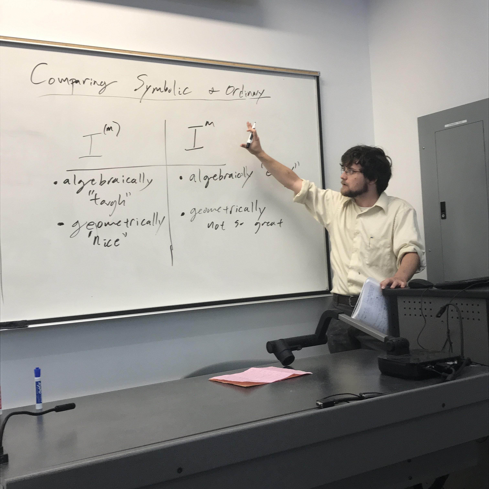

This semester, CARS was organized by Nick Packauskas and Josh Pollitz
Alessandro De Stefani
Measuring Singularities with (and without) Frobenius
November 29
The aim of this talk is to give an introduction to some numerical invariants that can be attached to a polynomial in order to measure ''how severe'' its singularities are. Depending on whether the characteristic of the base field is zero or prime, different techniques can be applied, leading to (seemingly) unrelated invariants. Time permitting, we will sketch connections between these two sides of the picture. The talk is based on a survey article on this topic written by Benito, Faber and Smith (arXiv: https://arxiv.org/abs/1309.4814).
Su Ji Hong
Little Bit of Eveyrthing: Su Ji's Oral Comp
November 15
This is a practice talk for my oral comprehensive exam. Thus this will be partitioned into several sections. I will first introduce basic definitions and define cluster algebra. Then I will show some applications to totally positive Grassmannian and Markov triple. Also I will talk about creating new quiver from any known quiver.
Josh Pollitz
The Dimension Inequality and the Theta Pairing
November 8
Today, we will pick up where Amadeus left off last week. Specifically, we will revisit the Theta pairing for hypersurfaces with the main goal of showing that it detects whether the dimension inequality holds. To do this, we will introduce Serre's intersection multiplicity and see how this relates to the Theta pairing. We will use this information to prove the main result of Hochster's '80 paper where he introduced the Theta pairing. Time permitting, we will see Hochster's main interest in defining this invariant for a hypersurface.
Amadeus Martin
An Intro to Tor and the Theta Invariant
November 1
This will be the first of a two week talk. Today, the main goal is to define Hochster�s theta invariant. To do this, I will introduce Tor and talk about free resolutions over hypersurfaces. I will use this information to define the theta invariant and compute some examples.
Seth Lindokken
Multigraded Modules and the BEH Conjecture
October 25
Last week we saw that the BEH Conjecture was true for rings of "low" dimension. While the conjecture remains wide open in general, there are some special cases that have been addressed. In today's talk we will address one such case: multigraded modules of finite length over a polynomial ring.
Eric Hopkins
The BEH Conjecture for Rings of Low Dimension
October 18
A longstanding conjecture from Buchsbaum, Eisenbud, and Horrocks suggests a lower bound for the Betti numbers of finite length modules of finite projective dimension. In this talk, we will outline the elementary proof of the conjecture for rings of low dimension, in preparation for Seth to discuss further results next week.
Mohsen Gheibi
A Proof of Equivalence of Direct Summand Theorem and Monomial Theorem
October 11
In 1974, M. Hochster proposed two equivalent conjectures namely "Direct Summand" conjecture and "Monomial" conjecture, and proved them for equi-characteristic rings. These conjectures were open in the mixed characteristic case until 2016 when Y. Andre and B. Bhatt resolved them in separate papers. In this talk, I am going to present Hochster's proof of equivalence of Direct Summand Theorem and Monomial Theorem.
Andrew Connor
Symbolic Powers and Bounds on the Waldschmidt Constant
October 4
I'll be speaking about some summer research I did involving a quantity called the Waldschmidt constant. Defining the Waldschmidt constant will draw on the basics of symbolic powers that Ben gave us a few weeks ago. Certain lower bounds on the Waldschmidt constant have a very pretty relationship with symbolic-power containment results, but we'll see that sometimes containments can't be counted on. Instead we'll pivot to a totally different area of math and use convex geometry to prove a theorem or two, and then look at how we used UNL's supercomputer to generate some significant computational evidence towards a related conjecture.
Nick Packauskas
Cohen-Macaulayness and the First Hilbert Coefficient
September 27
We will continue our investigation in to Hilbert polynomials and extend our scope to other coefficients besides the leading coefficient. The goal of today's talk is to prove a (semi)recent result relating the Cohen-Macaulay property for a local ring to the first Hilbert Coefficient.
Nick Packauskas
Hilbert Polynomials and Multiplicity
September 20
Continuing from the groundwork provided by Taran last week, we will further develop the theory of Hilbert polynomials and define a useful invariant of modules. We will then prove a classical result relating this invariant to regular rings. This will provide background for next week, when we will develop the theory even further and relate it to Cohen-Macaulay rings.
Taran Funk
Graded Rings, Hilbert Polynomials, and Multiplicity
September 13
In this talk we aim to set up the background material needed for Nick Packauskas to blow our minds next week. In particular, we will state some standard results to help us eventually define the Hilbert-Samuel Polynomial and the Multiplicity of a module.
Ben Drabkin
Symbolic Powers, Containment, and Defect; Part 2: Questions, Answers, and more Questions
September 6
This talk will give an introduction to some of the current areas of research in symbolic powers including the containment problem and the question of symbolic defect.

Ben Drabkin
Symbolic Powers, Containment, and Defect; Part 1: A Gentle Introduction to Symbolic Powers
August 30
The symbolic powers of an ideal are a construction with interesting geometric and combinatorial properties. This talk will aim to give the background necessary to define the symbolic powers of an ideal, motivate the definition, and give some of the foundational results in the field.